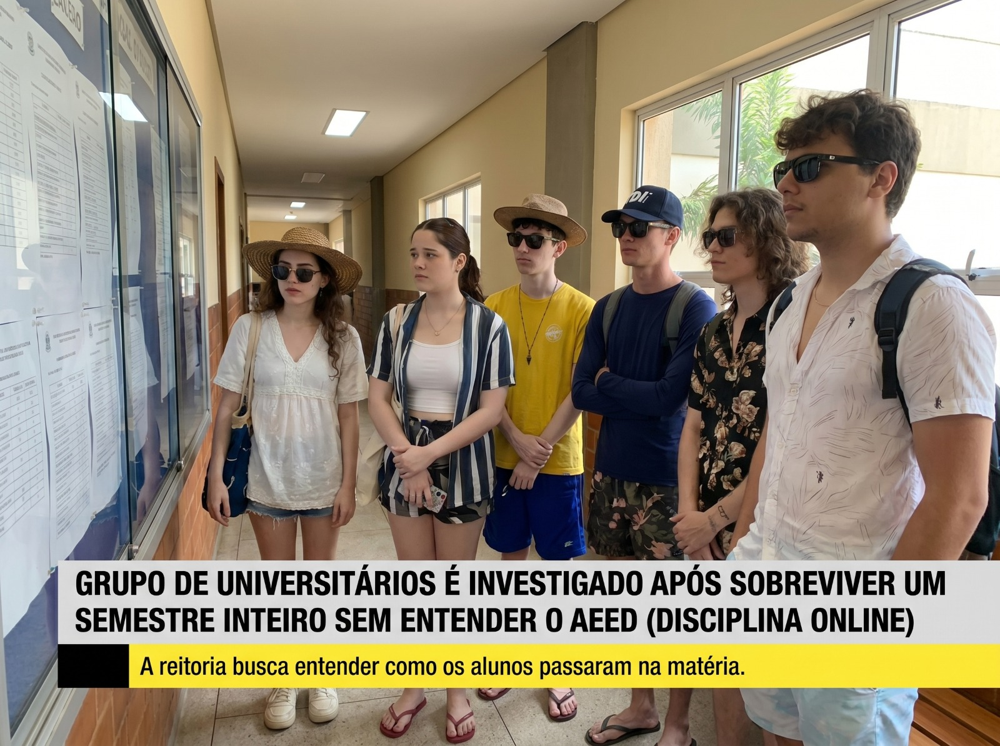
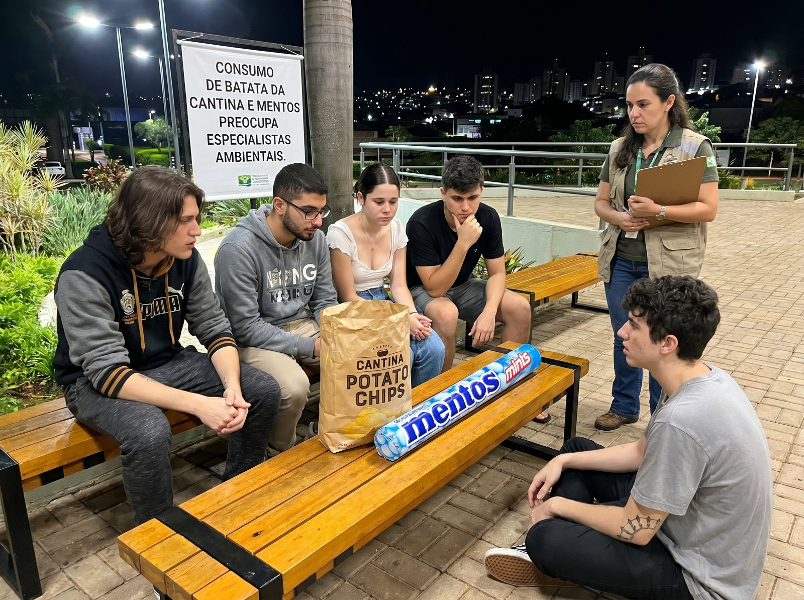
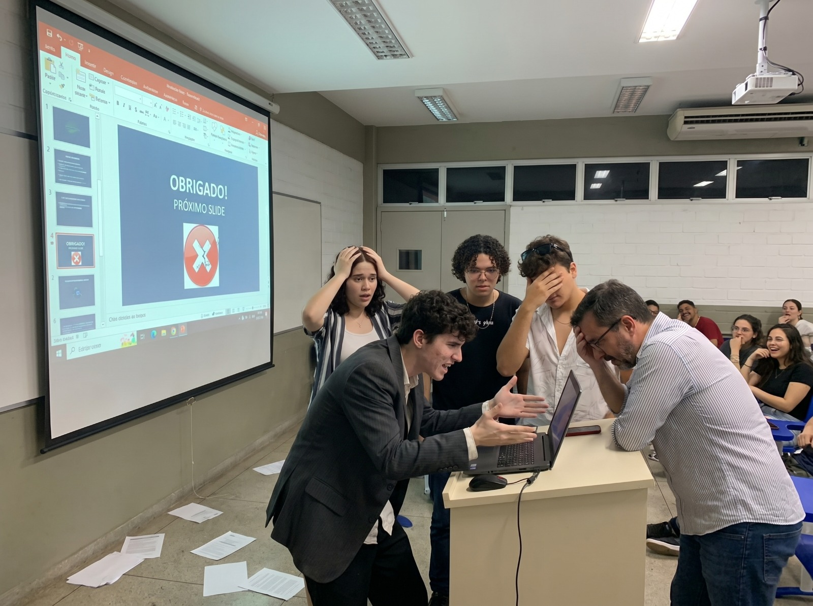

Edição Especial: O Caso AEED
Grupo de universitários é investigado após sobreviver um semestre inteiro sem entender o AEED.

Grupo de universitários é investigado após sobreviver um semestre inteiro sem entender o AEED.

Dados levantados apontam aumento de 437% na venda de batata próximo aos horários do grupo.

O grupo do WhatsApp dos estudantes registrou mais de 800 mensagens em apenas uma madrugada.
A faculdade iniciou uma investigação informal após um grupo formado por Lavígnea Ferrari Coimbra Elizeu, Mariana Mendes Cosme, Flavio Novelli De Oliveira, Rhuan Vitor Martin Debortoli, Nicolas Lemes Nicoli, Henrique e Iuri conseguir concluir diversas atividades sem jamais descobrir onde realmente ficam os materiais da disciplina de AEED — ou sequer cogitar a possibilidade de lê-los.
Segundo testemunhas, o grupo desenvolveu uma rotina extremamente avançada de sobrevivência acadêmica. O processo começa sempre da mesma forma: abrir o sistema acadêmico, encarar a tela em silêncio absoluto, sofrer psicologicamente por alguns minutos e então decidir que “o importante é entregar alguma coisa”.
Relatórios apontam ainda que aproximadamente 93% dos trabalhos foram produzidos em estado crítico de desespero entre 22h47 e 23h58, horário considerado pelos pesquisadores como “o pico da criatividade forçada”.
A coordenação informou que o grupo se tornou um fenômeno raro: “Eles não estudam pelo conteúdo. Eles estudam pelo medo.” Fontes próximas revelaram que o maior contato do grupo com os materiais da disciplina ocorreu quando alguém acidentalmente abriu um PDF errado tentando achar o botão de envio da atividade.
The university initiated an informal investigation after a group formed by Lavígnea Ferrari Coimbra Elizeu, Mariana Mendes Cosme, Flavio Novelli De Oliveira, Rhuan Vitor Martin Debortoli, Nicolas Lemes Nicoli, Henrique e Iuri managed to complete various activities without ever discovering where the materials for the AEED discipline actually are — or even considering the possibility of reading them.
According to witnesses, the group developed an extremely advanced routine for academic survival. The process always starts the same way: open the academic system, face the screen in absolute silence, suffer psychologically for a few minutes, and then decide that "what matters is to submit something."
Reports also indicate that approximately 93% of the assignments were produced in a state of critical despair between 10:47 PM and 11:58 PM, a time period considered by researchers as "the peak of forced creativity."
The coordination informed that the group has become a rare phenomenon: "They don't study for the content. They study for fear." Sources close to the matter revealed that the group's greatest contact with the discipline's materials occurred when someone accidentally opened the wrong PDF while trying to find the assignment submission button.
La facultad inició una investigación informal después de que un grupo formado por Lavígnea Ferrari Coimbra Elizeu, Mariana Mendes Cosme, Flavio Novelli De Oliveira, Rhuan Vitor Martin Debortoli, Nicolas Lemes Nicoli, Henrique y Iuri lograra concluir diversas actividades sin jamás descubrir dónde se encuentran realmente los materiales de la asignatura de AEED — o siquiera considerar la posibilidad de leerlos.
Según testigos, el grupo desarrolló una rutina extremadamente avanzada de supervivencia académica. El proceso comienza siempre de la misma forma: abrir el sistema académico, mirar la pantalla en silencio absoluto, sufrir psicológicamente por algunos minutos y entonces decidir que “lo importante es entregar algo”.
Los informes señalan además que aproximadamente el 93% de los trabajos fueron producidos en estado crítico de desesperación entre las 22:47 y las 23:58, horario considerado por los investigadores como “el pico de la creatividad forzada”.
La coordinación informó que el grupo se ha convertido en un fenómeno raro: “Ellos no estudian por el contenido. Ellos estudian por el miedo.” Fuentes cercanas revelaron que el mayor contacto del grupo con los materiales de la asignatura ocurrió cuando alguien accidentalmente abrió un PDF equivocado intentando encontrar el botón de envío de la actividad.
Funcionários relatam que, ao ouvirem passos no corredor, já começam automaticamente a preparar porções grandes “porque sabem que vem sofrimento pela frente”. Especialistas afirmam que o grupo atingiu um nível tão elevado de estresse acadêmico que o corpo já não diferencia ansiedade de fome.
Já o consumo de Mentos do grupo se tornou tão intenso que alunos começaram a suspeitar que o doce estaria sendo utilizado como combustível acadêmico alternativo.
Especialistas afirmam que o grupo atingiu um nível tão elevado de estresse acadêmico que o corpo já não diferencia ansiedade de fome.
Enquanto isso, Flavio Novelli De Oliveira teria desenvolvido uma habilidade inédita no ambiente universitário: passar duas horas olhando para o notebook sem realizar qualquer ação concreta.
Pesquisadores chamam o fenômeno de: “processamento mental improdutivo avançado.” Colegas afirmam que, durante esse período, Flavio apenas alterna entre: abrir o arquivo, fechar o arquivo, olhar para o teto, reclamar da faculdade, e pesquisar vídeos aleatórios “só pra descansar cinco minutos”.
Os cinco minutos geralmente duram uma hora e meia.
Já o consumo de Mentos do grupo se tornou tão intenso que alunos começaram a suspeitar que o doce estaria sendo utilizado como combustível acadêmico alternativo.
Employees report that, upon hearing footsteps in the hallway, they automatically begin preparing large portions “because they know suffering is coming.” Specialists state that the group has reached such a high level of academic stress that the body no longer differentiates anxiety from hunger.
Meanwhile, Flavio Novelli De Oliveira would have developed an unprecedented skill in the university environment: spending two hours looking at the laptop without performing any concrete action.
Researchers call this phenomenon: “Advanced unproductive mental processing.” Colleagues claim that, during this period, Flavio only alternates between: opening the file, closing the file, looking at the ceiling, complaining about the university, and searching for random videos “just to rest for five minutes”.
The five minutes usually last an hour and a half.
Already, the consumption of Mentos by the group has become so intense that students have started to suspect that the candy is being used as an alternative academic fuel.
Los empleados relatan que, al escuchar pasos en el pasillo, ya comienzan automáticamente a preparar porciones grandes "porque saben que viene sufrimiento por delante". Los especialistas afirman que el grupo alcanzó un nivel tan elevado de estrés académico que el cuerpo ya no diferencia la ansiedad del hambre.
Por otro lado, el consumo de Mentos del grupo se volvió tan intenso que los alumnos comenzaron a sospechar que el dulce estaría siendo utilizado como combustible académico alternativo.
Los especialistas afirman que el grupo alcanzó un nivel tan elevado de estrés académico que el cuerpo ya no diferencia la ansiedad del hambre.
Mientras tanto, Flavio Novelli De Oliveira habría desarrollado una habilidad inédita en el ambiente universitario: pasar dos horas mirando el notebook sin realizar ninguna acción concreta.
Los investigadores llaman al fenómeno: "procesamiento mental improductivo avanzado". Sus compañeros afirman que, durante ese período, Flavio solo alterna entre: abrir el archivo, cerrar el archivo, mirar al techo, quejarse de la facultad y buscar videos aleatorios "solo para descansar cinco minutos".
Los cinco minutos generalmente duran una hora y media.
Por otro lado, el consumo de Mentos del grupo se volvió tan intenso que los alumnos comenzaron a sospechar que el dulce estaría siendo utilizado como combustible académico alternativo.
Segundo análises, apenas 11 mensagens estavam realmente relacionadas ao trabalho. As demais se dividiam entre: Reclamações do onibus e Santa Tereza ate a faculdade quebrou, Memes, áudios de desespero pois o Rhuan bebeu, figurinhas, Mariana caindo no bait, e perguntas cuja resposta já havia sido enviada anteriormente.
No fim da madrugada, o trabalho foi entregue às 23h59 em um estado descrito pelos próprios integrantes como: “Nas mãos de Deus.”
As demais se dividiam entre: Reclamações do onibus e Santa Tereza ate a faculdade quebrou, Memes, áudios de desespero pois o Rhuan bebeu, figurinhas, Mariana caindo no bait, e perguntas cuja resposta já havia sido enviada anteriormente.
Entre os tópicos mais discutidos estavam: “Alguém começou?” “Era individual ou em grupo?” “Até que horas é a entrega?” “Tem que ser ABNT?” “Onde vocês estão?” “Quem ficou responsável por essa parte?”
De acordo com testemunhas, Iuri passou aproximadamente três horas digitando: “já tô fazendo” sem jamais abrir o arquivo do trabalho.
Já Lavígnea Ferrari Coimbra Elizeu teria surtado após descobrir que existia uma segunda página nas instruções da atividade.
Enquanto isso, Mariana Mendes Cosme tentava organizar o grupo enquanto simultaneamente aceitava emocionalmente que ninguém sabia o que estava acontecendo.
No fim da madrugada, o trabalho foi entregue às 23h59 em um estado descrito pelos próprios integrantes como: “Nas mãos de Deus.”
According to analyses, only 11 messages were truly related to the work. The rest were divided between: Complaints about the bus from Santa Tereza to the college breaking down, Memes, audio clips of despair because Rhuan drank, stickers, Mariana falling for the bait, and questions whose answers had already been sent previously.
At the end of the night, the work was submitted at 11:59 PM in a state described by the members themselves as: "In God's hands."
The remaining messages were divided between: Complaints about the bus from Santa Tereza to the college breaking down, Memes, audio clips of despair because Rhuan drank, stickers, Mariana falling for the bait, and questions whose answers had already been sent previously.
Among the most discussed topics were: "Has anyone started?" "Was it individual or in a group?" "What time is the deadline?" "Does it have to be ABNT format?" "Where are you guys?" "Who was responsible for this part?"
According to witnesses, Iuri spent approximately three hours typing: "I'm already doing it" without ever opening the assignment file.
Meanwhile, Lavígnea Ferrari Coimbra Elizeu allegedly freaked out after discovering that there was a second page in the activity instructions.
At the same time, Mariana Mendes Cosme tried to organize the group while simultaneously emotionally accepting that no one knew what was going on.
At the end of the night, the assignment was submitted at 11:59 PM in a state described by the members themselves as: "In God's hands."
Según los análisis, solo 11 mensajes estaban realmente relacionados con el trabajo. Los demás se dividían entre: Quejas del autobús de Santa Tereza a la facultad que se averió, Memes, audios de desesperación porque Rhuan bebió, stickers, Mariana cayendo en el bait, y preguntas cuya respuesta ya había sido enviada anteriormente.
Al final de la madrugada, el trabajo fue entregado a las 23:59 en un estado descrito por los propios integrantes como: "En las manos de Dios."
Los demás se dividían entre: Quejas del autobús de Santa Tereza a la facultad que se averió, Memes, audios de desesperación porque Rhuan bebió, stickers, Mariana cayendo en el bait, y preguntas cuya respuesta ya había sido enviada anteriormente.
Entre los temas más discutidos estaban: "¿Alguien empezó?" "¿Era individual o en grupo?" "¿Hasta qué hora es la entrega?" "¿Tiene que ser en formato ABNT?" "¿Dónde están?" "¿Quién quedó responsable de esta parte?"
De acuerdo con testigos, Iuri pasó aproximadamente tres horas escribiendo: "ya lo estoy haciendo" sin jamás abrir el archivo del trabajo.
Por su parte, Lavígnea Ferrari Coimbra Elizeu habría enloquecido tras descubrir que existía una segunda página en las instrucciones de la actividad.
Mientras tanto, Mariana Mendes Cosme intentaba organizar el grupo mientras simultáneamente aceptaba emocionalmente que nadie sabía lo que estaba pasando.
Al final de la madrugada, el trabajo fue entregado a las 23:59 en un estado descrito por los propios integrantes como: "En las manos de Dios."